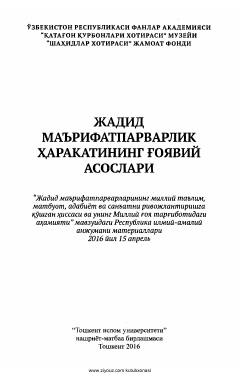

JMTurkiston jadidchilik harakati va uning ma'naviy-ma'rifiy asoslariga bag'ishlangan ilmiy to'plam.
Mazkur to'plam Turkiston jadidchilik harakati va uning ma'naviy-ma'rifiy asoslarining mohiyatiga bag'ishlangan ilmiy-amaliy anjuman materiallarini o'z ichiga oladi. Unda jadidlarning milliy ta'lim, matbuot, adabiyot va san'atni rivojlantirishga qo'shgan hissasi hamda milliy g'oya targ'ibidagi ahamiyati yoritilgan. Asar tarixchilar, tadqiqotchilar va keng kitobxonlar ommasiga mo'ljallangan.